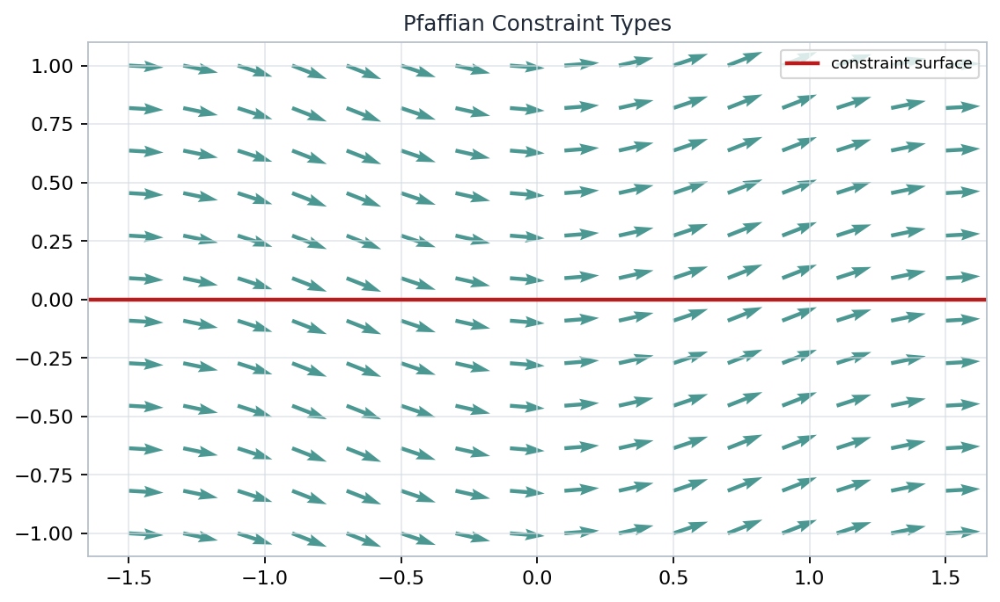
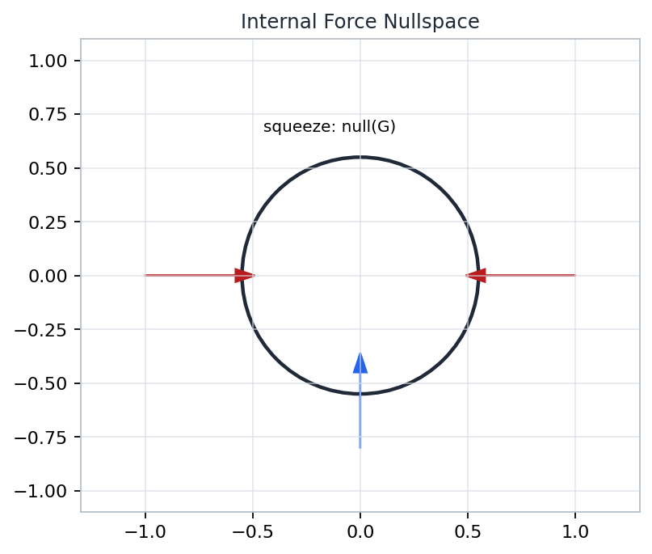
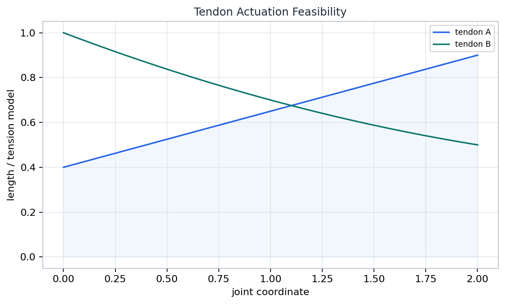

A multifingered hand is not several robot arms in parallel. It is one constrained dynamical system whose useful controls split into object motion, contact consistency, and squeeze.
A contact model first removes instantaneous directions. The admissible velocity space is the nullspace of the constraint rows.

Generated chapter artifact: velocity planes and forbidden directions.
The multiplier vector is not a numerical trick. It is the contact or joint reaction needed to keep acceleration consistent with the constraints.
Choose any virtual displacement that respects the instantaneous constraints. Constraint reactions disappear from the virtual-work equation.
The disk is a compact warning label for hand contacts: local rolling equations are simple, but their allowed directions vary with configuration.
Replacing a velocity constraint by an invented position equation can remove real motions or add impossible ones.
After ideal constraints are imposed and independent coordinates are selected, the reduced hand-object dynamics retain the manipulator form: symmetric positive inertia, velocity-product terms, potential or bias terms, and projected inputs.
The vector eta changes contact loading without changing the net object wrench. That is how a grasp squeezes harder while tracking the same object motion.
Internal force is useful only if it remains compatible with unilateral contact and friction limits.

Generated chapter artifact: squeeze forces in the nullspace of the grasp map.
Multiple manipulators share one object acceleration and must agree on the same constraint wrench.
Task-space equations inherit inertia through the Jacobian, for example \(\widetilde M=M_o+J^{-T}M_fJ^{-1}\).
Position is controlled in admissible tangent directions while normal reaction forces are regulated separately.
Extra finger mobility can improve posture, avoid limits, or regulate contacts while leaving the object task velocity unchanged.
A redundant direction is useful only after it has survived the contact constraints. Task nullspace and constraint nullspace must be reconciled.
A grasp can hold an object yet fail to command arbitrary local object motion. The missing motions appear as rank loss in the grasp or hand Jacobian structure.
A tendon route maps joint motion into tendon extension. Transposing that map converts tendon tension into joint torques.
Because tendons pull but do not push, feasible torque directions form a cone rather than a full vector space.
Elastic tendon stretch can maintain positive tension, giving the hand a passive route toward contact preload and force-closure margins.
The controller must ask whether a desired internal force lies inside both the contact-force cone and the tendon-generated torque cone.

Generated chapter artifact: pull-only tendon tensions and feasible torque cones.
A good hand controller composes maps between spaces and checks each nullspace, rank, and cone before asking for torque.